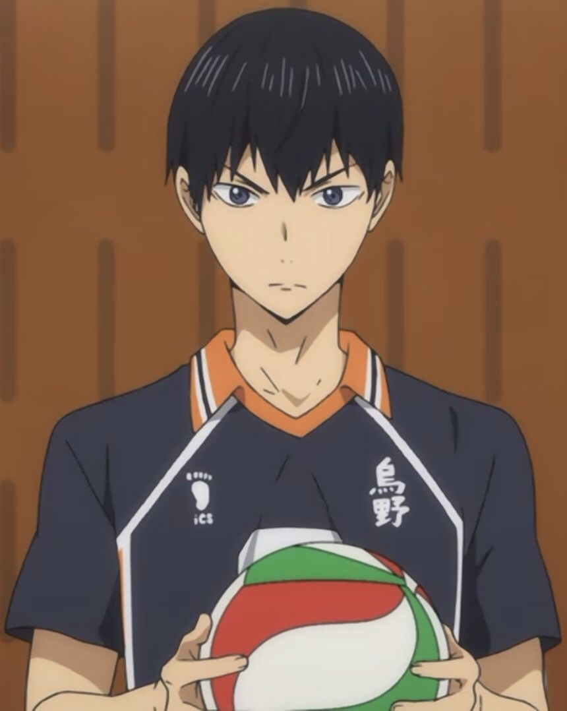
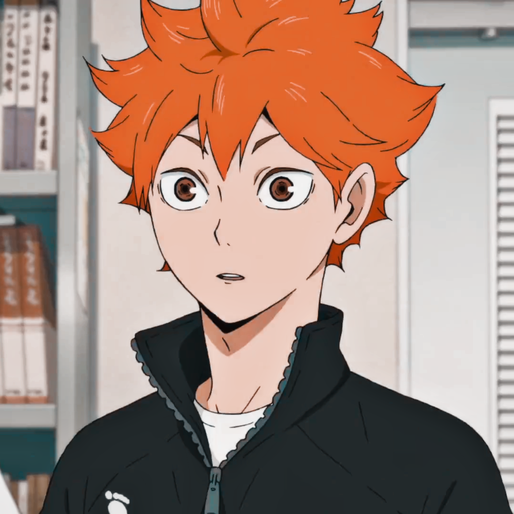
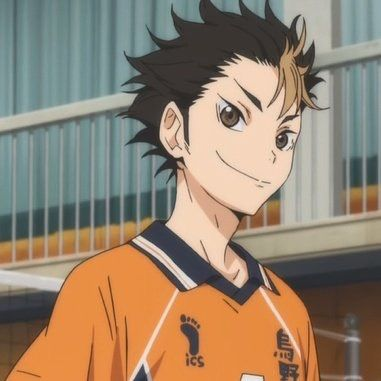
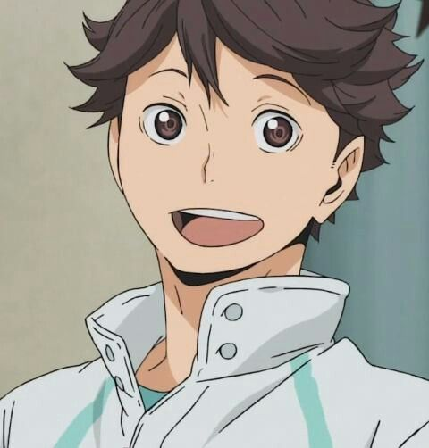
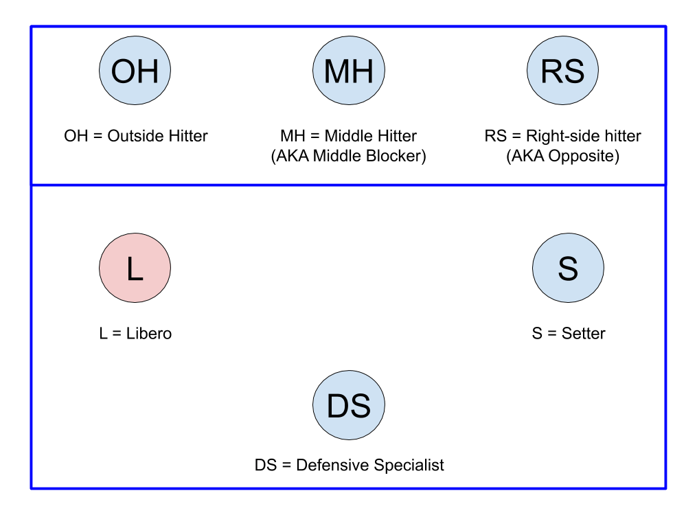

TOP 5 MOST POPULAR CHARACTERS & THEIR ATHLETIC ABILITY
Each character received a score from 0-5 judged in power, jumping, stamina, game sense, technique, and speed.
The top 5 characters all excel in at least one particular category.




Source: Haikyuu!! Wiki
MOST POPULAR VOLLEYBALL POSITIONS
Based on the 50 most popular characters' positions, setter is the most favored position among fans.

Source: Haikyuu!! Wiki
TIMELINE OF HAIKYUU!!
Source: Haikyuu!! Wiki
GROWING FAN BASE
From 2013 to 2014, we see a large increase in the number of copies sold. Now, the numbers are starting to
level off, but still showing a steady stream of new readers.
Source: Haikyuu!! Wiki
REVIVAL OF VOLLEYBALL IN JAPAN AFTER THE SERIALIZATION OF HAIKYUU!! IN 2012
Among men and women, there is a decline in the number of people playing volleyball from 1996 to 2011. However in 2016,
there is a drastic spike from 2011 in the number of people playing volleyball. We expect to see the number of people
playing volleyball to continue to rise from 2016 to 2021.
Source: The data is from surveys conducted every 5 years by the Statistics Bureau of Japan.
SOARING PASSION FOR VOLLEYBALL
In the first 4 years after the release of Haikyuu, there is a 237% increase in the number of
people playing the sport. Obviously, volleyball is becoming more mainstream among the Japanese.
Source: The data is from surveys conducted every 5 years by the Statistics Bureau of Japan.